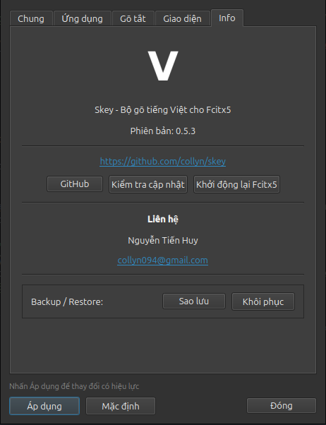
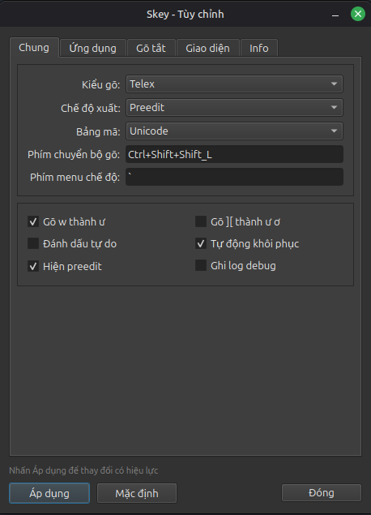
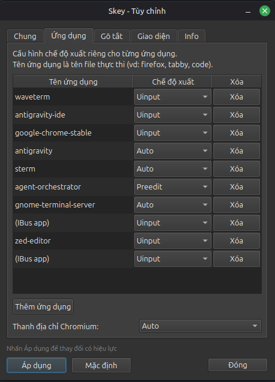
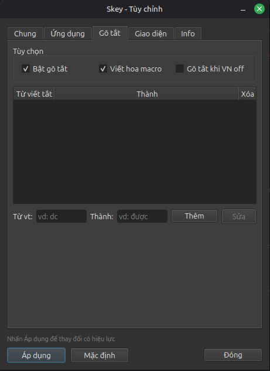
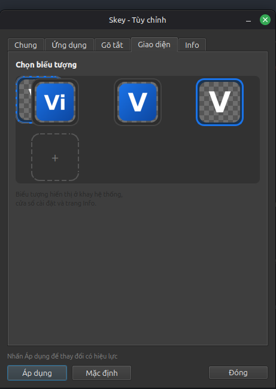

SKey — Bộ gõ Tiếng Việt tốt nhất cho Linux
Giải pháp gõ tiếng Việt không gạch chân cho Linux chuẩn Fcitx5 — Phản hồi tức thì, mượt mà như bộ gõ native.
Gõ tiếng Việt không gạch chân cho Linux
Mặc định gõ trực tiếp không gạch chân (Non-preedit) qua Surrounding Text. Ký tự xuất hiện ngay lập tức, mang lại cảm giác gõ native 100%.
Gõ tự do kiểu UniKey
Double-letter transform (dd→đ, oo→ô) mọi vị trí. Đổi
dấu liên tục, viết tắt (vcđ, nđm) thoải mái.
Auto Mode thông minh
Tự động chọn Surrounding Text hoặc Uinput dựa trên ứng dụng. Nhận diện terminal, Electron, Chromium — không cần cấu hình.
Support nhiều nền tảng
Hoạt động trên cả X11 và Wayland. Hỗ trợ KDE Plasma, GNOME, Hyprland, Sway, Niri. Cài đặt trên Ubuntu, Fedora, Arch.
Nhẹ và nhanh
Engine bamboo-core (Rust) qua FFI. Chạy monolithic không daemon. Adaptive delay cho Uinput — không mất chữ.
Cấu hình & cập nhật dễ dàng
Settings GUI (Qt6) trực quan. Cập nhật phiên bản mới chỉ 2 click trong GUI, hoặc qua apt /
dnf / pacman.
Cài đặt — Ubuntu / Debian
Hướng dẫn này áp dụng cho Ubuntu (bao gồm cả GNOME, Kubuntu, Xubuntu, Lubuntu), Linux Mint, Zorin OS, Pop!_OS, elementary OS, Debian, và tất cả các bản phân phối dựa trên Debian.
Cách 1: APT Repository (khuyến nghị)
Thêm repository chính thức để nhận cập nhật tự động qua apt update:
Bước 1: Thêm repository SKey:
curl -fsSL https://collyn.github.io/skey/install.sh | sudo bashBước 2: Cài đặt SKey:
sudo apt install fcitx5-skeySau khi cài, SKey tự động chạy skey-setup để cấu hình mọi thứ. Bộ gõ sẵn sàng sử dụng — chuyển đổi
bằng Ctrl+Space.
Cách 2: Từ file .deb
Nếu không muốn thêm repository, bạn có thể tải trực tiếp file .deb từ GitHub Releases:
sudo dpkg -i fcitx5-skey_*.deb
sudo apt install -f # cài dependencies nếu thiếu
skey-setup # cấu hình fcitx5sudo apt update && sudo apt upgrade.
Cài đặt — Fedora
Hướng dẫn này áp dụng cho Fedora Workstation (GNOME) và Fedora KDE Spin. Cũng hoạt động trên openSUSE (xem tab bên dưới).
Bước 1: Thêm RPM repository:
curl -fsSL https://collyn.github.io/skey/install-fedora.sh | sudo bashBước 2: Cài đặt SKey:
sudo dnf install fcitx5-skeyBước 3: Cài thêm frontend modules (bắt buộc trên Fedora):
sudo dnf install fcitx5-gtk fcitx5-qtCập nhật tự động qua:
sudo dnf update fcitx5-skeyBước 1: Thêm RPM repository:
curl -fsSL https://collyn.github.io/skey/install-opensuse.sh | sudo bashBước 2: Cài đặt SKey:
sudo zypper install fcitx5-skeyBước 3: Cài thêm frontend GTK:
sudo zypper install fcitx5-gtkCập nhật tự động qua:
sudo zypper up fcitx5-skeyCài đặt — Arch Linux
Hướng dẫn này áp dụng cho Arch Linux, Manjaro, EndeavourOS, CachyOS, và các bản phân phối dựa trên Arch.
Bước 1: Thêm repository:
curl -fsSL https://collyn.github.io/skey/install-arch.sh | sudo bashBước 2: Cài đặt SKey:
sudo pacman -S fcitx5-skeyBước 3: Cài thêm frontend modules:
sudo pacman -S fcitx5-gtk fcitx5-qtCập nhật tự động qua:
sudo pacman -Syu fcitx5-skeyhttps://collyn.github.io/skey/key.asc
Build từ source
Nếu bạn muốn tự biên dịch SKey từ mã nguồn, hãy làm theo các bước dưới đây.
1. Cài đặt dependencies
Chọn hệ điều hành của bạn:
Bắt buộc — toolchain, fcitx5 headers, dbus:
sudo apt install build-essential cmake extra-cmake-modules pkg-config gettext \
libfcitx5core-dev libfcitx5utils-dev fcitx5 \
libdbus-1-dev librsvg2-bin curlTuỳ chọn — Settings GUI (Qt6):
sudo apt install qt6-base-devrustc/cargo từ apt quá cũ. Cài qua
rustup:
curl --proto '=https' --tlsv1.2 -sSf https://sh.rustup.rs | sh -s -- -y --default-toolchain stable
source "$HOME/.cargo/env"sudo apt install rustc cargo
Bắt buộc:
sudo dnf install cmake extra-cmake-modules pkgconf-pkg-config gettext \
fcitx5-devel fcitx5 dbus-devel \
rust cargo gcc-c++ makeTuỳ chọn — Settings GUI (Qt6) + PNG icon:
sudo dnf install qt6-qtbase-devel librsvg2-toolsBắt buộc:
sudo pacman -S base-devel cmake extra-cmake-modules pkgconf gettext \
fcitx5 dbus \
rust cargoTuỳ chọn — Settings GUI (Qt6) + PNG icon:
sudo pacman -S qt6-base librsvgBắt buộc:
sudo zypper install cmake extra-cmake-modules pkgconf gettext \
fcitx5-devel fcitx5 dbus-1-devel \
rust cargo gcc-c++ makeTuỳ chọn — Settings GUI (Qt6) + PNG icon:
sudo zypper install qt6-base-devel rsvg-convertrust/cargo từ repo distro quá cũ (Rust ≥ 1.70 được khuyến nghị), cài qua rustup:
curl --proto '=https' --tlsv1.2 -sSf https://sh.rustup.rs | sh -s -- -y --default-toolchain stable
source "$HOME/.cargo/env"2. Clone và build
git clone https://github.com/collyn/skey.git
cd skey
cmake -B build -DCMAKE_INSTALL_PREFIX=/usr -DCMAKE_BUILD_TYPE=Release
cmake --build build -j$(nproc)
sudo cmake --install buildqt6-base-dev, CMake sẽ tự động bỏ qua Settings GUI và chỉ build engine core + uinput
server. Settings GUI không bắt buộc để sử dụng SKey.
3. Chạy setup
Sau khi build và install xong, chạy script cấu hình:
skey-setupScript skey-setup sẽ tự động:
- Thêm SKey vào fcitx5 profile làm bộ gõ mặc định
- Bật
ActiveByDefault=TruevàShareInputState=All - Export biến môi trường (
GTK_IM_MODULE,QT_IM_MODULE,XMODIFIERS...) - Khởi động lại fcitx5 daemon
- Trên Wayland: tự động reconnect compositor virtual keyboard
- Enable và start uinput server service
Cấu hình Fcitx5
Sau khi cài đặt, skey-setup tự động cấu hình hầu hết mọi thứ. Phần này hướng dẫn thêm cho từng
trường hợp X11 và Wayland.
Trên X11
Trên X11, SKey hoạt động ngay sau khi cài đặt mà không cần cấu hình thêm. Script
skey-setup tự động:
- Export biến môi trường vào
~/.profile,~/.xprofile, và shell config (.bashrc/.zshrc/config.fish) - Đặt
GTK_IM_MODULE=fcitx,QT_IM_MODULE=fcitx5,XMODIFIERS=@im=fcitx - Khởi động fcitx5 daemon
Chuyển đổi bộ gõ bằng Ctrl+Space.
skey-setup.
Trên Wayland
Wayland yêu cầu thêm một bước: chọn Virtual Keyboard là Fcitx 5 trong System Settings. Cách làm tùy theo desktop environment:
KDE Plasma (Kubuntu, KDE Neon, Fedora KDE...)

- Mở System Settings
- Vào Input Devices → Virtual Keyboard
- Chọn Fcitx 5
- Bấm Apply
fcitx5-frontend-qt5).
GNOME (Ubuntu, Fedora Workstation, Zorin OS...)

- Mở Settings
- Vào Keyboard → Input Sources
- Bấm + để thêm nguồn nhập mới
- Chọn Vietnamese (Fcitx 5)
zwp_input_method_v2 mặc định. Script
skey-setup không đặt GTK_IM_MODULE trên GNOME/Wayland để tránh xung đột với GTK native
text-input.
Hyprland / Sway / Niri (Tiling WM)
Thêm dòng sau vào file config của compositor:
Thêm vào ~/.config/hypr/hyprland.conf:
exec-once = fcitx5 -dThêm vào ~/.config/sway/config:
exec fcitx5 -dThêm vào ~/.config/niri/config.kdl:
spawn-at-startup "fcitx5" "-d"So sánh X11 và Wayland
| Đặc điểm | X11 | Wayland |
|---|---|---|
| Cấu hình thêm | Không cần | Chọn Virtual Keyboard |
| Biến môi trường | Tự động qua skey-setup |
Tự động + environment.d |
| System tray icon | XEmbed (classicui) | StatusNotifierItem (SNI) |
| Chromium address bar | Phát hiện qua AT-SPI2 | Tự động qua CapabilityFlag::Url |
| Uinput delay | 3–30ms (native), 6–60ms (Electron) | 2–18ms (thấp hơn) |
| Sau khi fcitx5 restart | Tự động reconnect | Cần re-trigger virtual keyboard (skey-setup làm tự động) |
Kiểm tra biến môi trường
Để kiểm tra biến môi trường đã được đặt đúng chưa:
echo $GTK_IM_MODULE # Kết quả: fcitx
echo $QT_IM_MODULE # Kết quả: fcitx5
echo $XMODIFIERS # Kết quả: @im=fcitxNếu kết quả trống, chạy lại skey-setup rồi logout/login.
Cập nhật SKey
Có hai cách để cập nhật SKey lên phiên bản mới nhất:
Cách 1: Từ Settings GUI (dễ nhất)
SKey có sẵn tính năng cập nhật ngay trong giao diện — không cần mở terminal:
- Mở fcitx5-skey-settings (từ menu ứng dụng hoặc gõ
fcitx5-skey-settingstrong terminal) - Chuyển sang Tab Info
- Bấm nút "Kiểm tra cập nhật" — ứng dụng sẽ truy vấn GitHub Releases để so sánh phiên bản
- Nếu có phiên bản mới: hiện dialog với version + release notes → bấm "Cập nhật ngay"
- Ứng dụng tự động: tải package → cài đặt (yêu cầu mật khẩu admin) → chạy skey-setup → restart Fcitx5
- Settings GUI tự khởi động lại với phiên bản mới

Cách 2: Từ Terminal
Nếu bạn cài qua repository (khuyến nghị), chạy lệnh cập nhật tương ứng:
sudo apt update && sudo apt upgrade fcitx5-skeysudo dnf update fcitx5-skeysudo pacman -Syu fcitx5-skeysudo zypper up fcitx5-skeyskey-setupKhắc phục sự cố
Không gõ được tiếng Việt
Đây là vấn đề phổ biến nhất. Hãy thử các bước sau theo thứ tự:
-
Chạy lại skey-setup:
Terminal
skey-setup - Logout rồi login lại để session nhận biến môi trường mới
- Trên Wayland: Kiểm tra Virtual Keyboard đã chọn Fcitx 5 chưa (xem Cấu hình Fcitx5)
-
Kiểm tra fcitx5 đang chạy:
Nếu không có kết quả (fcitx5 không chạy), khởi động bằng:Terminal
pidof fcitx5fcitx5 -d
Kiểm tra Uinput Server
Nếu chế độ Uinput không hoạt động (mất chữ trong terminal):
systemctl status fcitx5-skey-uinput-server@$USER.serviceNếu service không chạy, bật thủ công:
sudo systemctl enable --now fcitx5-skey-uinput-server@$USER.serviceXem log debug
SKey ghi log ra /tmp/skey.log. Theo dõi realtime:
tail -f /tmp/skey.logRestart Fcitx5
Nếu cần restart fcitx5 thủ công:
fcitx5 -r -dHoặc sử dụng nút "Restart Fcitx5" trong fcitx5-skey-settings → Tab Info.
Sử dụng cơ bản
Sau khi cài đặt, chuyển đổi bộ gõ bằng Ctrl+Space. SKey hỗ trợ hai phương thức gõ:
Bảng gõ Telex
Tất cả transform hoạt động ở mọi vị trí trong từ (đầu, giữa, cuối):
| Gõ | Kết quả | Mô tả |
|---|---|---|
aa |
â | Dấu mũ |
oo |
ô | Dấu mũ |
ee |
ê | Dấu mũ |
uw / ww |
ư | Dấu móc |
ow |
ơ | Dấu móc |
aw |
ă | Dấu trăng |
dd |
đ | D đét |
s |
dấu sắc | á, é, ó... |
f |
dấu huyền | à, è, ò... |
r |
dấu hỏi | ả, ẻ, ỏ... |
x |
dấu ngã | ã, ẽ, õ... |
j |
dấu nặng | ạ, ẹ, ọ... |
z |
xóa dấu | bỏ dấu thanh |
Bảng gõ VNI
| Gõ | Kết quả | Gõ | Kết quả |
|---|---|---|---|
1 |
dấu sắc | 6 |
dấu mũ (â, ê, ô) |
2 |
dấu huyền | 7 |
dấu móc (ơ, ư) |
3 |
dấu hỏi | 8 |
dấu trăng (ă) |
4 |
dấu ngã | 9 |
d đét (đ) |
5 |
dấu nặng | 0 |
xóa dấu |
Phím tắt
| Phím | Chức năng |
|---|---|
| Ctrl+Space | Bật/tắt bộ gõ tiếng Việt |
| ` (backtick) | Mở menu cấu hình nhanh (chọn chế độ gõ, loại trừ app...) |
Mở Settings
Cấu hình chi tiết qua ứng dụng Settings GUI:
fcitx5-skey-settingsHoặc mở từ menu ứng dụng → tìm "SKey Settings".
Giao diện SKey Settings GUI




Những người đóng góp (Contributors)
Cảm ơn tất cả các thành viên đã đóng góp và hỗ trợ phát triển bộ gõ SKey trên GitHub: